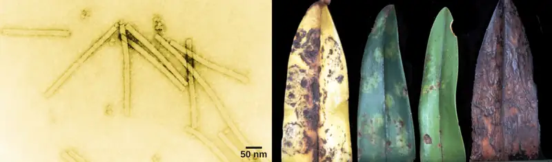
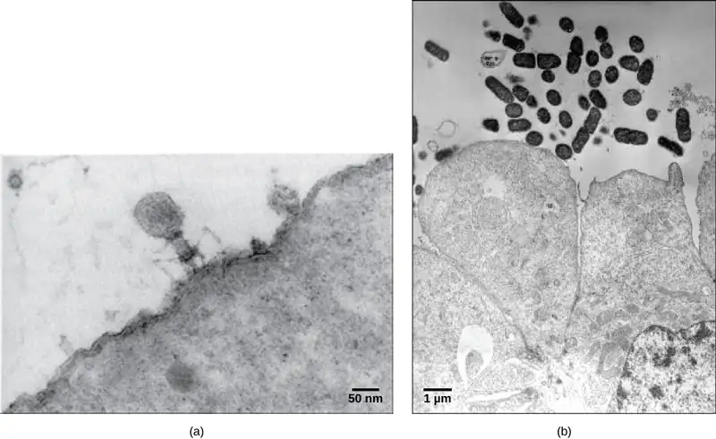
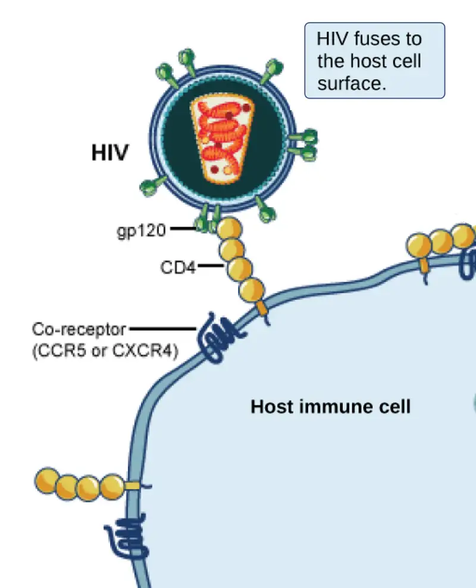
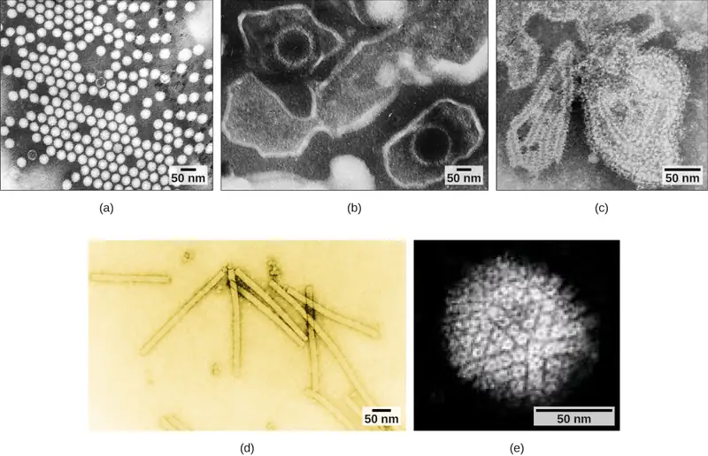
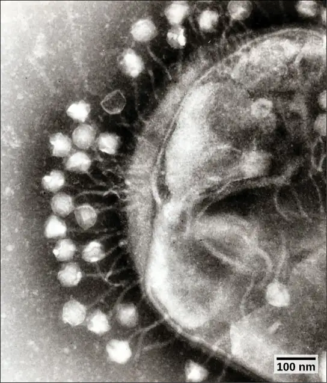
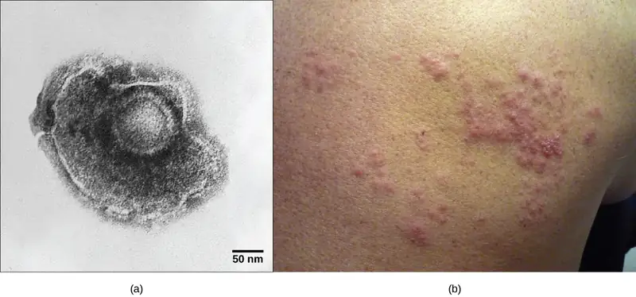
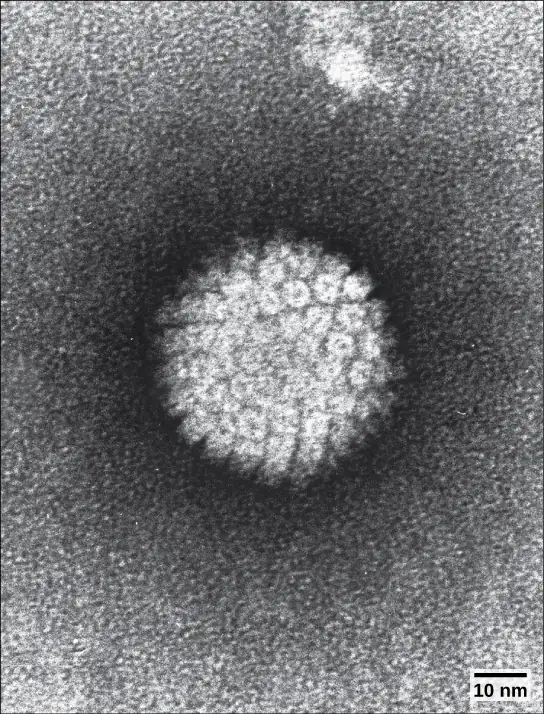
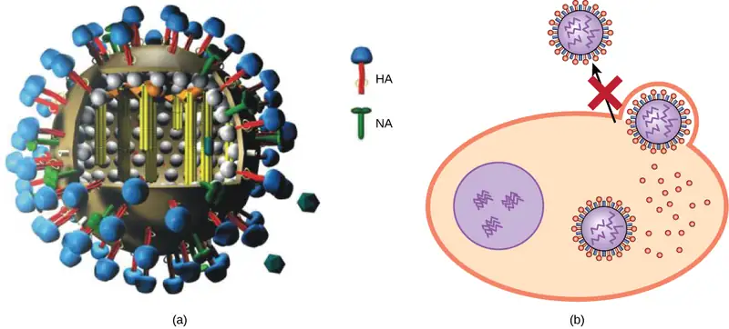
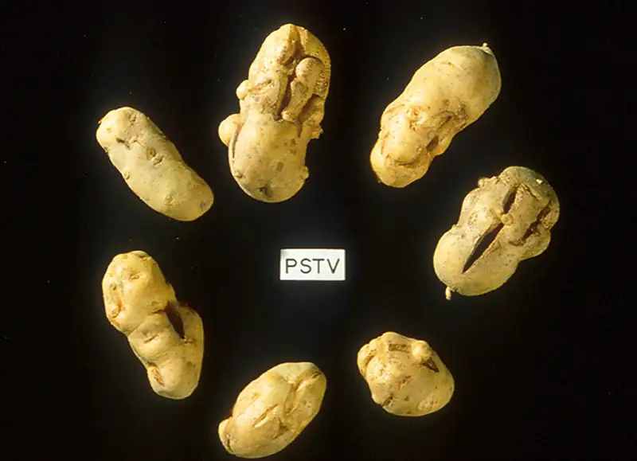

Chapter 21: Viruses¶
Introduction¶

Viruses are noncellular parasitic entities that cannot be classified within any kingdom. They can infect organisms as diverse as bacteria, plants, and animals. In fact, viruses exist in a sort of netherworld between a living organism and a nonliving entity. Living things grow, metabolize, and reproduce. In contrast, viruses are not cellular, do not have a metabolism or grow, and cannot divide by cell division. Viruses can copy, or replicate themselves; however, they are entirely dependent on resources derived from their host cells to produce progeny viruses—which are assembled in their mature form. No one knows exactly when or how viruses evolved or from what ancestral source because viruses have not left a fossil record. Some virologists contend that modern viruses are a mosaic of bits and pieces of nucleic acids picked up from various sources along their respective evolutionary paths.
21.1 Viral Evolution, Morphology, and Classification¶
Learning Objectives
By the end of this section, you will be able to do the following:
- Describe how viruses were first discovered and how they are detected
- Discuss three hypotheses about how viruses evolved
- Describe the general structure of a virus
- Recognize the basic shapes of viruses
- Understand past and emerging classification systems for viruses
- Describe the basis for the Baltimore classification system
Viruses are diverse entities: They vary in structure, methods of replication, and the hosts they infect. Nearly all forms of life—from prokaryotic bacteria and archaeans, to eukaryotes such as plants, animals, and fungi—have viruses that infect them. While most biological diversity can be understood through evolutionary history (such as how species have adapted to changing environmental conditions and how different species are related to one another through common descent), much about virus origins and evolution remains unknown.
Discovery and Detection¶
Viruses were first discovered after the development of a porcelain filter—the Chamberland-Pasteur filter—that could remove all bacteria visible in the microscope from any liquid sample. In 1886, Adolph Meyer demonstrated that a disease of tobacco plants—tobacco mosaic disease—could be transferred from a diseased plant to a healthy one via liquid plant extracts. In 1892, Dmitri Ivanowski showed that this disease could be transmitted in this way even after the Chamberland-Pasteur filter had removed all viable bacteria from the extract. Still, it was many years before it was proved that these “filterable” infectious agents were not simply very small bacteria but were a new type of very small, disease-causing particle.
Most virions, or single virus particles, are very small, about 20 to 250 nanometers in diameter. However, some recently discovered viruses from amoebae range up to 1000 nm in diameter. With the exception of large virions, like the poxvirus and other large DNA viruses, viruses cannot be seen with a light microscope. It was not until the development of the electron microscope in the late 1930s that scientists got their first good view of the structure of the tobacco mosaic virus (TMV) (Figure 21.1), discussed above, and other viruses (Figure 21.2). The surface structure of virions can be observed by both scanning and transmission electron microscopy, whereas the internal structures of the virus can only be observed in images from a transmission electron microscope. The use of electron microscopy and other technologies has allowed for the discovery of many viruses of all types of living organisms.

Evolution of Viruses¶
Although biologists have a significant amount of knowledge about how present-day viruses mutate and adapt, much less is known about how viruses originated in the first place. When exploring the evolutionary history of most organisms, scientists can look at fossil records and similar historic evidence. However, viruses do not fossilize, as far as we know, so researchers must extrapolate from investigations of how today’s viruses evolve and by using biochemical and genetic information to create speculative virus histories.
Most scholars agree that viruses don’t have a single common ancestor, nor is there a single reasonable hypothesis about virus origins. There are current evolutionary scenarios that may explain the origin of viruses. One such hypothesis, the “devolution” or the regressive hypothesis, suggests that viruses evolved from free-living cells, or from intracellular prokaryotic parasites. However, many components of how this process might have occurred remain a mystery. A second hypothesis, the escapist or the progressive hypothesis, suggests that viruses originated from RNA and DNA molecules, or self-replicating entities similar to transposons or other mobile genetic elements, that escaped from a host cell with the ability to enter another. A third hypothesis, the virus first hypothesis, suggests that viruses may have been the first self-replicating entities before the first cells. In all cases, viruses are probably continuing to evolve along with the cells on which they rely on as hosts.
As technology advances, scientists may develop and refine additional hypotheses to explain the origins of viruses. The emerging field called virus molecular systematics attempts to do just that through comparisons of sequenced genetic material. These researchers hope one day to better understand the origin of viruses—a discovery that could lead to advances in the treatments for the ailments they produce.
Viral Morphology¶
Viruses are noncellular, meaning they are biological entities that do not have a cellular structure. They therefore lack most of the components of cells, such as organelles, ribosomes, and the plasma membrane. A virion consists of a nucleic acid core, an outer protein coating or capsid, and sometimes an outer envelope made of protein and phospholipid membranes derived from the host cell. Viruses may also contain additional proteins, such as enzymes, within the capsid or attached to the viral genome. The most obvious difference between members of different viral families is the variation in their morphology, which is quite diverse. An interesting feature of viral complexity is that the complexity of the host does not necessarily correlate with the complexity of the virion. In fact, some of the most complex virion structures are found in the bacteriophages—viruses that infect the simplest living organisms, bacteria.
Morphology¶
Viruses come in many shapes and sizes, but these features are consistent for each viral family. As we have seen, all virions have a nucleic acid genome covered by a protective capsid. The proteins of the capsid are encoded in the viral genome, and are called capsomeres. Some viral capsids are simple helices or polyhedral “spheres,” whereas others are quite complex in structure (Figure 21.3).

In general, the capsids of viruses are classified into four groups: helical, icosahedral, enveloped, and head-and-tail. Helical capsids are long and cylindrical. Many plant viruses are helical, including TMV. Icosahedral viruses have shapes that are roughly spherical, such as those of poliovirus or herpesviruses. Enveloped viruses have membranes derived from the host cell that surrounds the capsids. Animal viruses, such as HIV, are frequently enveloped. Head-and-tail viruses infect bacteria and have a head that is similar to icosahedral viruses and a tail shaped like helical viruses.
Many viruses use some sort of glycoprotein to attach to their host cells via molecules on the cell called viral receptors. For these viruses, attachment is required for later penetration of the cell membrane; only after penetration takes place can the virus complete its replication inside the cell. The receptors that viruses use are molecules that are normally found on cell surfaces and have their own physiological functions. It appears that viruses have simply evolved to make use of these molecules for their own replication. For example, HIV uses the CD4 molecule on T lymphocytes as one of its receptors (Figure 21.4). CD4 is a type of molecule called a cell adhesion molecule, which functions to keep different types of immune cells in close proximity to each other during the generation of a T lymphocyte immune response.

One of the most complex virions known, the T4 bacteriophage (which infects the Escherichia coli) bacterium, has a tail structure that the virus uses to attach to host cells and a head structure that houses its DNA.
Adenovirus, a non-enveloped animal virus that causes respiratory illnesses in humans, uses glycoprotein spikes protruding from its capsomeres to attach to host cells. Non-enveloped viruses also include those that cause polio (poliovirus), plantar warts (papillomavirus), and hepatitis A (hepatitis A virus).
Enveloped virions, such as the influenza virus, consist of nucleic acid (RNA in the case of influenza) and capsid proteins surrounded by a phospholipid bilayer envelope that contains virus-encoded proteins. Glycoproteins embedded in the viral envelope are used to attach to host cells. Other envelope proteins are the matrix proteins that stabilize the envelope and often play a role in the assembly of progeny virions. Chicken pox, HIV, and mumps are other examples of diseases caused by viruses with envelopes. Because of the fragility of the envelope, non-enveloped viruses are more resistant to changes in temperature, pH, and some disinfectants than enveloped viruses.
Overall, the shape of the virion and the presence or absence of an envelope tell us little about what disease the virus may cause or what species it might infect, but they are still useful means to begin viral classification (Figure 21.5).
Visual Connection
![Illustration a shows bacteriophage T 4, which houses its D N A genome in a hexagonal head. A long, straight tail extends from the bottom of the head. Tail fibers attached to the base of the tail are bent, like spider legs. In b, adenovirus houses its D N A genome in a round capsid made from many small capsomere subunits. Glycoproteins extend from the capsomere, like pins from a pincushion. In c, the influenza virus houses its R N A genome and a bullet-shaped capsid. A spherical viral envelope, lined with matrix proteins, surrounds the capsid. Two different varieties of glycoprotein spike are embedded in the envelope. Approximately 80 percent of the spikes are hemagglutinin. The remaining 20 percent or so of the glycoprotein spikes consist of neuraminidase.](img/figure-b21-02-01.webp)
Which of the following statements about virus structure is true?
- All viruses are encased in a viral membrane.
- The capsomere is made up of small protein subunits called capsids.
- DNA is the genetic material in all viruses.
- Glycoproteins help the virus attach to the host cell.
Types of Nucleic Acid¶
Unlike nearly all living organisms that use DNA as their genetic material, viruses may use either DNA or RNA. The virus core contains the genome—the total genetic content of the virus. Viral genomes tend to be small, containing only those genes that encode proteins which the virus cannot get from the host cell. This genetic material may be single- or double-stranded. It may also be linear or circular. While most viruses contain a single nucleic acid, others have genomes divided into several segments. The RNA genome of the influenza virus is segmented, which contributes to its variability and continuous evolution, and explains why it is difficult to develop a vaccine against it.
In DNA viruses, the viral DNA directs the host cell’s replication proteins to synthesize new copies of the viral genome and to transcribe and translate that genome into viral proteins. Human diseases caused by DNA viruses include chickenpox, hepatitis B, and adenoviruses. Sexually transmitted DNA viruses include the herpes virus and the human papilloma virus (HPV), which has been associated with cervical cancer and genital warts.
RNA viruses contain only RNA as their genetic material. To replicate their genomes in the host cell, the RNA viruses must encode their own enzymes that can replicate RNA into RNA or, in the retroviruses, into DNA. These RNA polymerase enzymes are more likely to make copying errors than DNA polymerases, and therefore often make mistakes during transcription. For this reason, mutations in RNA viruses occur more frequently than in DNA viruses. This causes them to change and adapt more rapidly to their host. Human diseases caused by RNA viruses include influenza, hepatitis C, measles, and rabies. The HIV virus, which is sexually transmitted, is an RNA retrovirus.
The Challenge of Virus Classification¶
Because most viruses probably evolved from different ancestors, the systematic methods that scientists have used to classify prokaryotic and eukaryotic cells are not very useful. If viruses represent “remnants” of different organisms, then even genomic or protein analysis is not useful. Why?, Because viruses have no common genomic sequence that they all share. For example, the 16S rRNA sequence so useful for constructing prokaryote phylogenies is of no use for a creature with no ribosomes! Biologists have used several classification systems in the past. Viruses were initially grouped by shared morphology. Later, groups of viruses were classified by the type of nucleic acid they contained, DNA or RNA, and whether their nucleic acid was single- or double-stranded. However, these earlier classification methods grouped viruses differently, because they were based on different sets of characters of the virus. The most commonly used classification method today is called the Baltimore classification scheme, and is based on how messenger RNA (mRNA) is generated in each particular type of virus.
Past Systems of Classification¶
Viruses contain only a few elements by which they can be classified: the viral genome, the type of capsid, and the envelope structure for the enveloped viruses. All of these elements have been used in the past for viral classification (Table 21.1 and Figure 21.6). Viral genomes may vary in the type of genetic material (DNA or RNA) and its organization (single- or double-stranded, linear or circular, and segmented or non-segmented). In some viruses, additional proteins needed for replication are associated directly with the genome or contained within the viral capsid.
Table 21.1
| Virus Classification by Genome Structure | |
|---|---|
| Genome Structure | Examples |
| • RNA • DNA |
• Rabies virus, retroviruses • Herpesviruses, smallpox virus |
| • Single-stranded • Double-stranded |
• Rabies virus, retroviruses • Herpesviruses, smallpox virus |
| • Linear • Circular |
• Rabies virus, retroviruses, herpesviruses, smallpox virus • Papillomaviruses, many bacteriophages |
| • Non-segmented: genome consists of a single segment of genetic material • Segmented: genome is divided into multiple segments |
• Parainfluenza viruses • Influenza viruses |
![Part a is an illustration of the rabies virus, which is bullet shaped. R N A is coiled inside a capsid, which is encased in a matrix protein lined viral envelope studded with glycoproteins. Part a below is a micrograph of a cluster of bullet shaped rabies viruses. Part b is a micrograph of variola virus, which has D N A encased in a bow shaped capsid. An oval matrix protein-lined envelope surrounds the capsid. Part b below shows irregular, bumpy lesions on the arms and legs of a person with smallpox.](img/figure-21-01-04ab.webp)
Viruses can also be classified by the design of their capsids (Table 21.2 and Figure 21.7). Capsids are classified as naked icosahedral, enveloped icosahedral, enveloped helical, naked helical, and complex. The type of genetic material (DNA or RNA) and its structure (single- or double-stranded, linear or circular, and segmented or non-segmented) are used to classify the virus core structures (Table 21.2).
Table 21.2
| Virus Classification by Capsid Structure | |
|---|---|
| Capsid Classification | Examples |
| Naked icosahedral | Hepatitis A virus, polioviruses |
| Enveloped icosahedral | Epstein-Barr virus, herpes simplex virus, rubella virus, yellow fever virus, HIV-1 |
| Enveloped helical | Influenza viruses, mumps virus, measles virus, rabies virus |
| Naked helical | Tobacco mosaic virus |
| Complex with many proteins; some have combinations of icosahedral and helical capsid structures | Herpesviruses, smallpox virus, hepatitis B virus, T4 bacteriophage |

Baltimore Classification¶
The most commonly and currently used system of virus classification was first developed by Nobel Prize-winning biologist David Baltimore in the early 1970s. In addition to the differences in morphology and genetics mentioned above, the Baltimore classification scheme groups viruses according to how the mRNA is produced during the replicative cycle of the virus.
Group I viruses contain double-stranded DNA (dsDNA) as their genome. Their mRNA is produced by transcription in much the same way as with cellular DNA, using the enzymes of the host cell.
Group II viruses have single-stranded DNA (ssDNA) as their genome. They convert their single-stranded genomes into a dsDNA intermediate before transcription to mRNA can occur.
Group III viruses use dsRNA as their genome. The strands separate, and one of them is used as a template for the generation of mRNA using the RNA-dependent RNA polymerase encoded by the virus.
Group IV viruses have ssRNA as their genome with a positive polarity, which means that the genomic RNA can serve directly as mRNA. Intermediates of dsRNA, called replicative intermediates, are made in the process of copying the genomic RNA. Multiple, full-length RNA strands of negative polarity (complementary to the positive-stranded genomic RNA) are formed from these intermediates, which may then serve as templates for the production of RNA with positive polarity, including both full-length genomic RNA and shorter viral mRNAs.
Group V viruses contain ssRNA genomes with a negative polarity, meaning that their sequence is complementary to the mRNA. As with Group IV viruses, dsRNA intermediates are used to make copies of the genome and produce mRNA. In this case, the negative-stranded genome can be converted directly to mRNA. Additionally, full-length positive RNA strands are made to serve as templates for the production of the negative-stranded genome.
Group VI viruses have diploid (two copies) ssRNA genomes that must be converted, using the enzyme reverse transcriptase, to dsDNA; the dsDNA is then transported to the nucleus of the host cell and inserted into the host genome. Then, mRNA can be produced by transcription of the viral DNA that was integrated into the host genome.
Group VII viruses have partial dsDNA genomes and make ssRNA intermediates that act as mRNA, but are also converted back into dsDNA genomes by reverse transcriptase, necessary for genome replication.
The characteristics of each group in the Baltimore classification are summarized in Table 21.3 with examples of each group.
Table 21.3
| Baltimore Classification | |||
|---|---|---|---|
| Group | Characteristics | Mode of mRNA Production | Example |
| I | Double-stranded DNA | mRNA is transcribed directly from the DNA template | Herpes simplex (herpesvirus) |
| II | Single-stranded DNA | DNA is converted to double-stranded form before RNA is transcribed | Canine parvovirus (parvovirus) |
| III | Double-stranded RNA | mRNA is transcribed from the RNA genome | Childhood gastroenteritis (rotavirus) |
| IV | Single stranded RNA (+) | Genome functions as mRNA | Common cold (picornavirus) |
| V | Single stranded RNA (-) | mRNA is transcribed from the RNA genome | Rabies (rhabdovirus) |
| VI | Single stranded RNA viruses with reverse transcriptase | Reverse transcriptase makes DNA from the RNA genome; DNA is then incorporated in the host genome; mRNA is transcribed from the incorporated DNA | Human immunodeficiency virus (HIV) |
| VII | Double stranded DNA viruses with reverse transcriptase | The viral genome is double-stranded DNA, but viral DNA is replicated through an RNA intermediate; the RNA may serve directly as mRNA or as a template to make mRNA | Hepatitis B virus (hepadnavirus) |
21.2 Virus Infections and Hosts¶
Learning Objectives
By the end of this section, you will be able to do the following:
- List the steps of replication and explain what occurs at each step
- Describe the lytic and lysogenic cycles of virus replication
- Explain the transmission of plant and animal viruses
- Discuss some of the diseases caused by plant and animal viruses
- Discuss the economic impact of plant and animal viruses
Viruses are obligate, intracellular parasites. A virus must first recognize and attach to a specific living cell prior to entering it. After penetration, the invading virus must copy its genome and manufacture its own proteins. Finally, the progeny virions must escape the host cell so that they can infect other cells. Viruses can infect only certain species of hosts and only certain cells within that host. Specific host cells that a virus must occupy and use to replicate are called permissive. In most cases, the molecular basis for this specificity is due to a particular surface molecule known as the viral receptor on the host cell surface. A specific viral receptor is required for the virus to attach. In addition, differences in metabolism and host-cell immune responses (based on differential gene expression) are a likely factor in determining which cells a virus may target for replication.
Steps of Virus Infections¶
A virus must use its host-cell processes to replicate. The viral replication cycle can produce dramatic biochemical and structural changes in the host cell, which may cause cell damage. These changes, called cytopathic effects, can change cell functions or even destroy the cell. Some infected cells, such as those infected by the common cold virus known as rhinovirus, die through lysis (bursting) or apoptosis (programmed cell death or “cell suicide”), releasing all progeny virions at once. The symptoms of viral diseases result both from such cell damage caused by the virus and from the immune response to the virus, which attempts to control and eliminate the virus from the body.
Many animal viruses, such as HIV (human immunodeficiency virus), leave the infected cells of the immune system by a process known as budding, where virions leave the cell individually. During the budding process, the cell does not undergo lysis and is not immediately killed. However, the damage to the cells that the virus infects may make it impossible for the cells to function normally, even though the cells remain alive for a period of time. Most productive viral infections follow similar steps in the virus replication cycle: attachment, penetration, uncoating, replication, assembly, and release (Figure 21.8).
Attachment¶
A virus attaches to a specific receptor site on the host cell membrane through attachment proteins in the capsid or via glycoproteins embedded in the viral envelope. The specificity of this interaction determines the host—and the cells within the host—that can be infected by a particular virus. This can be illustrated by thinking of several keys and several locks, where each key will fit only one specific lock.
Interactive
This video explains how influenza attacks the body.
Entry¶
Viruses may enter a host cell either with or without the viral capsid. The nucleic acid of bacteriophages enters the host cell “naked,” leaving the capsid outside the cell. Plant and animal viruses can enter through endocytosis (as you may recall, the cell membrane surrounds and engulfs the entire virus). Some enveloped viruses enter the cell when the viral envelope fuses directly with the cell membrane. Once inside the cell, the viral capsid degrades, and then the viral nucleic acid is released and becomes available for replication and transcription.
Replication and Assembly¶
The replication mechanism depends on the viral genome. DNA viruses usually use host-cell proteins and enzymes to replicate the viral DNA and to transcribe viral mRNA, which is then used to direct viral protein synthesis. RNA viruses usually use the RNA core as a template for synthesis of viral genomic RNA and mRNA. The viral mRNA directs the host cell to synthesize viral enzymes and capsid proteins, and assemble new virions.
Of course, there are exceptions to this pattern. If a host cell does not provide the enzymes necessary for viral replication, viral genes supply the information to direct synthesis of the missing proteins. Retroviruses, such as HIV (group VI of the Baltimore classification scheme), have an RNA genome that must be reverse transcribed into DNA, which then is incorporated into the host cell genome. To convert RNA into DNA, retroviruses must contain genes that encode the virus-specific enzyme reverse transcriptase that transcribes an RNA template to DNA. Reverse transcription never occurs in uninfected host cells—the enzyme reverse transcriptase is only derived from the expression of viral genes within the infected host cells. The fact that HIV produces some of its own enzymes not found in the host has allowed researchers to develop drugs that inhibit these enzymes without affecting the host’s metabolism.
This approach has led to the development of a variety of drugs used to treat HIV and has been effective at reducing the number of infectious virions (copies of viral RNA) in the blood to non-detectable levels in many HIV-infected individuals.
Egress¶
The last stage of viral replication is the release of the new virions produced in the host organism, where they are able to infect adjacent cells and repeat the replication cycle. As you’ve learned, some viruses are released when the host cell dies, and other viruses can leave infected cells by budding through the membrane without directly killing the cell.
Visual Connection
![The illustration shows the steps of an influenza virus infection. In step 1, influenza virus becomes attached to a target epithelial cell. In step 2, the cell engulfs the virus by endocytosis, and the virus becomes encased in the cell's plasma membrane. In step 3, the membrane dissolves, and the viral contents are released into the cytoplasm. Viral m R N A enters the nucleus, where it is replicated by viral R N A polymerase. In step 4, viral m R N A exits to the cytoplasm, where it is used to make viral proteins. In step 5, new viral particles are released into the extracellular fluid. The cell, which is not killed in the process, continues to make new virus.](img/figure-21-02-01.webp)
Influenza virus is packaged in a viral envelope that fuses with the plasma membrane. This way, the virus can exit the host cell without killing it. What advantage does the virus gain by keeping the host cell alive?
Interactive
Watch a video on viruses, identifying structures, modes of transmission, replication, and more.
Different Hosts and Their Viruses¶
As you’ve learned, viruses often infect very specific hosts, as well as specific cells within the host. This feature of a virus makes it specific to one or a few species of life on Earth. On the other hand, so many different types of viruses exist on Earth that nearly every living organism has its own set of viruses trying to infect its cells. Even prokaryotes, the smallest and simplest of cells, may be attacked by specific types of viruses. In the following section, we will look at some of the features of viral infection of prokaryotic cells. As we have learned, viruses that infect bacteria are called bacteriophages (Figure 21.9). Archaea have their own similar viruses.
Bacteriophages¶

Most bacteriophages are dsDNA viruses, which use host enzymes for DNA replication and RNA transcription. Phage particles must bind to specific surface receptors and actively insert the genome into the host cell. (The complex tail structures seen in many bacteriophages are actively involved in getting the viral genome across the prokaryotic cell wall.) When infection of a cell by a bacteriophage results in the production of new virions, the infection is said to be productive. If the virions are released by bursting the cell, the virus replicates by means of a lytic cycle (Figure 21.10). An example of a lytic bacteriophage is T4, which infects Escherichia coli found in the human intestinal tract. Sometimes, however, a virus can remain within the cell without being released. For example, when a temperate bacteriophage infects a bacterial cell, it replicates by means of a lysogenic cycle (Figure 21.10), and the viral genome is incorporated into the genome of the host cell. When the phage DNA is incorporated into the host-cell genome, it is called a prophage. An example of a lysogenic bacteriophage is the λ (lambda) virus, which also infects the E. coli bacterium. Viruses that infect plant or animal cells may sometimes undergo infections where they are not producing virions for long periods. An example is the animal herpesviruses, including herpes simplex viruses, the cause of oral and genital herpes in humans. In a process called latency, these viruses can exist in nervous tissue for long periods of time without producing new virions, only to leave latency periodically and cause lesions in the skin where the virus replicates. Even though there are similarities between lysogeny and latency, the term lysogenic cycle is usually reserved to describe bacteriophages. Latency will be described in more detail in the next section.
Visual Connection
![The bacteriophage lytic cycle begins when the phage attaches via a slender stalk to the host cell. Linear DNA from the viral head is injected into the host cell. The phage DNA circularizes, remaining separate from the host DNA. The phage DNA replicates, and new phage proteins are made. New phage particles are assembled. The cell lyses, releasing the phage. The bacteriophage lysogenic cycle begins the same way as the lytic cycle, with phage infecting a host cell. However, the phage DNA becomes incorporated into the host genome. The cell divides, and phage DNA is passed on to daughter cells. Under stressful conditions, the phage DNA is excised from the bacterial chromosome and enters the lytic cycle.](img/figure-b21-03-01.webp)
Which of the following statements is false?
- In the lytic cycle, new phages are produced and released into the environment.
- In the lysogenic cycle, phage DNA is incorporated into the host genome.
- An environmental stressor can cause the phage to initiate the lysogenic cycle.
- Cell lysis only occurs in the lytic cycle.
Plant Viruses¶
Most plant viruses, like the tobacco mosaic virus, have single-stranded (+) RNA genomes. However, there are also plant viruses in most other virus categories. Unlike bacteriophages, plant viruses do not have active mechanisms for delivering the viral genome across the protective cell wall. For a plant virus to enter a new host plant, some type of mechanical damage must occur. This damage is often caused by weather, insects, animals, fire, or human activities like farming or landscaping. Movement from cell to cell within a plant can be facilitated by viral modification of plasmodesmata (cytoplasmic threads that pass from one plant cell to the next). Additionally, plant offspring may inherit viral diseases from parent plants. Plant viruses can be transmitted by a variety of vectors, through contact with an infected plant’s sap, by living organisms such as insects and nematodes, and through pollen. The transfer of a virus from one plant to another is known as horizontal transmission, whereas the inheritance of a virus from a parent is called vertical transmission.
Symptoms of viral diseases vary according to the virus and its host (Table 21.4). One common symptom is hyperplasia, the abnormal proliferation of cells that causes the appearance of plant tumors known as galls. Other viruses induce hypoplasia, or decreased cell growth, in the leaves of plants, causing thin, yellow areas to appear. Still other viruses affect the plant by directly killing plant cells, a process known as cell necrosis. Other symptoms of plant viruses include malformed leaves; black streaks on the stems of the plants; altered growth of stems, leaves, or fruits; and ring spots, which are circular or linear areas of discoloration found in a leaf.
Table 21.4
| Some Common Symptoms of Plant Viral Diseases | |
|---|---|
| Symptom | Appears as |
| Hyperplasia | Galls (tumors) |
| Hypoplasia | Thinned, yellow splotches on leaves |
| Cell necrosis | Dead, blackened stems, leaves, or fruit |
| Abnormal growth patterns | Malformed stems, leaves, or fruit |
| Discoloration | Yellow, red, or black lines, or rings in stems, leaves, or fruit |
Plant viruses can seriously disrupt crop growth and development, significantly affecting our food supply. They are responsible for poor crop quality and quantity globally, and can bring about huge economic losses annually. Others viruses may damage plants used in landscaping. Some viruses that infect agricultural food plants include the name of the plant they infect, such as tomato spotted wilt virus, bean common mosaic virus, and cucumber mosaic virus. In plants used for landscaping, two of the most common viruses are peony ring spot and rose mosaic virus. There are far too many plant viruses to discuss each in detail, but symptoms of bean common mosaic virus result in lowered bean production and stunted, unproductive plants. In the ornamental rose, the rose mosaic disease causes wavy yellow lines and colored splotches on the leaves of the plant.
Animal Viruses¶
Animal viruses, unlike the viruses of plants and bacteria, do not have to penetrate a cell wall to gain access to the host cell. The virus may even induce the host cell to cooperate in the infection process. Non-enveloped or “naked” animal viruses may enter cells in two different ways. As a protein in the viral capsid binds to its receptor on the host cell, the virus may be taken inside the cell via a vesicle during the normal cell process of receptor-mediated endocytosis. An alternative method of cell penetration used by non-enveloped viruses is for capsid proteins to undergo shape changes after binding to the receptor, creating channels in the host cell membrane. The viral genome is then “injected” into the host cell through these channels in a manner analogous to that used by many bacteriophages.
Enveloped viruses also have two ways of entering cells after binding to their receptors: receptor-mediated endocytosis, or fusion. Many enveloped viruses enter the cell by receptor-mediated endocytosis in a fashion similar to that seen in some non-enveloped viruses. On the other hand, fusion only occurs with enveloped virions. These viruses, which include HIV among others, use special fusion proteins in their envelopes to cause the envelope to fuse with the plasma membrane of the cell, thus releasing the genome and capsid of the virus into the cell cytoplasm.
After making their proteins and copying their genomes, animal viruses complete the assembly of new virions and exit the cell. As we have already discussed using the example the influenza virus, enveloped animal viruses may bud from the cell membrane as they assemble themselves, taking a piece of the cell’s plasma membrane in the process. On the other hand, non-enveloped viral progeny, such as rhinoviruses, accumulate in infected cells until there is a signal for lysis or apoptosis, and all virions are released together.
As you will learn in the next module, animal viruses are associated with a variety of human diseases. Some of them follow the classic pattern of acute disease, where symptoms get increasingly worse for a short period followed by the elimination of the virus from the body by the immune system and eventual recovery from the infection. Examples of acute viral diseases are the common cold and influenza. Other viruses cause long-term chronic infections, such as the virus causing hepatitis C, whereas others, like herpes simplex virus, only cause intermittent symptoms. Still other viruses, such as human herpesviruses 6 and 7, which in some cases can cause the minor childhood disease roseola, often successfully cause productive infections without causing any symptoms at all in the host, and thus we say these patients have an asymptomatic infection.
In hepatitis C infections, the virus grows and reproduces in liver cells, causing low levels of liver damage. The damage is so low that infected individuals are often unaware that they are infected, and many infections are detected only by routine blood work on patients with risk factors such as intravenous drug use. On the other hand, since many of the symptoms of viral diseases are caused by immune responses, a lack of symptoms is an indication of a weak immune response to the virus. This allows the virus to escape elimination by the immune system and persist in individuals for years, all the while producing low levels of progeny virions in what is known as a chronic viral disease. Chronic infection of the liver by this virus leads to a much greater chance of developing liver cancer, sometimes as much as 30 years after the initial infection.
As already discussed, herpes simplex virus can remain in a state of latency in nervous tissue for months, even years. As the virus “hides” in the tissue and makes few if any viral proteins, there is nothing for the immune response to act against, and immunity to the virus slowly declines. Under certain conditions, including various types of physical and psychological stress, the latent herpes simplex virus may be reactivated and undergo a lytic replication cycle in the skin, causing the lesions associated with the disease. Once virions are produced in the skin and viral proteins are synthesized, the immune response is again stimulated and resolves the skin lesions in a few days or weeks by destroying viruses in the skin. As a result of this type of replicative cycle, appearances of cold sores and genital herpes outbreaks only occur intermittently, even though the viruses remain in the nervous tissue for life. Latent infections are common with other herpesviruses as well, including the varicella-zoster virus that causes chickenpox. After having a chickenpox infection in childhood, the varicella-zoster virus can remain latent for many years and reactivate in adults to cause the painful condition known as “shingles” (Figure 21.11).

Some animal-infecting viruses, including the hepatitis C virus discussed above, are known as oncogenic viruses: They have the ability to cause cancer. These viruses interfere with the normal regulation of the host cell cycle either by introducing genes that stimulate unregulated cell growth (oncogenes) or by interfering with the expression of genes that inhibit cell growth. Oncogenic viruses can be either DNA or RNA viruses. Cancers known to be associated with viral infections include cervical cancer, caused by human papillomavirus (HPV) (Figure 21.12), liver cancer caused by hepatitis C virus, T-cell leukemia, and several types of lymphoma.

Interactive
This video shows the life cycle of a virus.
21.3 Prevention and Treatment of Viral Infections¶
Learning Objectives
By the end of this section, you will be able to do the following:
- Identify major viral illnesses that affect humans
- Compare vaccinations and anti-viral drugs as medical approaches to viruses
Viruses cause a variety of diseases in animals, including humans, ranging from the common cold to potentially fatal illnesses like meningitis (Figure 21.13). These diseases can be treated by antiviral drugs or by vaccines; however, some viruses, such as HIV, are capable both of avoiding the immune response and of mutating within the host organism to become resistant to antiviral drugs.
![The illustration shows an overview of human viral diseases. Viruses that cause encephalitis or meningitis, or inflammation of the brain and surrounding tissues, include measles, arbovirus, rabies, J C virus, and L C M virus. The common cold is caused by rhinovirus, parainfluenza virus, and respiratory syncytial virus. Eye infections are caused by herpes simple virus, adenovirus, and cytomegalovirus. Pharyngitis, or inflammation of the pharynx, is caused by adenovirus, Epstein-Barr virus, and cytomegalovirus. Parotitis, or inflammation of the parotid glands, is caused by mumps virus. Gingivostomatitis, or inflammation of the oral mucosa, is caused by herpes simplex type I virus. Pneumonia is caused by influenza virus types A and B, parainfluenza virus, respiratory syncytial virus, adenovirus, and SARS coronavirus. Cardiovascular problems are caused by coxsackie B virus. Hepatitis is caused by hepatitis virus types A, B, C, D, and E. Myelitis in the spinal cord is caused by poliovirus and H L T V dash 1. Skin infections are caused by varicella-zoster virus, human herpesvirus 6, smallpox, molluscum contagiosum, human papillomavirus, parvovirus B 19, rubella, measles, and coxsackie A virus. Gastroenteritis, or digestive disease, is caused by adenovirus, rotavirus, norovirus, astrovirus, and coronavirus. Sexually transmitted diseases are caused by herpes simplex type 2, human papillomavirus, and H I V. Pancreatitis is caused by coxsackie B virus.](img/figure-21-03-01-70a3.webp)
Vaccines for Prevention¶
The primary method of controlling viral disease is by vaccination, which is intended to prevent outbreaks by building immunity to a virus or virus family (Figure 21.14). Vaccines may be prepared using live viruses, killed viruses, or molecular subunits of the virus. Note that the killed viral vaccines and subunit viruses are both incapable of causing disease, nor is there any valid evidence that vaccinations contribute to autism.
Live viral vaccines are designed in the laboratory to cause few symptoms in recipients while giving them protective immunity against future infections. Polio was one disease that represented a milestone in the use of vaccines. Polio epidemics occurred with increasing frequency and impact as the twentieth century progressed, becoming a terrifying and tragic event each summer. Tens of thousands of people died and many more were paralyzed; children made up a large portion of the victims. Using killed virus tested on HeLa cell line (originally obtained from Henrietta Lacks and then mass produced to meet the need), Jonas Salk developed a successful vaccine. Mass immunization campaigns in the 1950s (killed vaccine) and 1960s (live vaccine) significantly reduced the incidence of the disease. The success of the polio vaccine paved the way for the routine dispensation of childhood vaccines against measles, mumps, rubella, chickenpox, and other diseases.
The issue with using live vaccines (which are usually more effective than killed vaccines), is the low but significant danger that these viruses will revert to their disease-causing form by back mutations. Live vaccines are usually made by attenuating (weakening) the “wild-type” (disease-causing) virus by growing it in the laboratory in tissues or at temperatures different from what the virus is accustomed to in the host. Adaptations to these new cells or temperatures induce mutations in the genomes of the virus, allowing it to grow better in the laboratory while inhibiting its ability to cause disease when reintroduced into conditions found in the host. These attenuated viruses thus still cause infection, but they do not grow very well, allowing the immune response to develop in time to prevent major disease. Back mutations occur when the vaccine undergoes mutations in the host such that it readapts to the host and can again cause disease, which can then be spread to other humans in an epidemic. This type of scenario happened as recently as 2007 in Nigeria where mutations in a polio vaccine led to an epidemic of polio in that country.
Some vaccines are in continuous development because certain viruses, such as influenza and HIV, have a high mutation rate compared to that of other viruses and normal host cells. With influenza, mutations in the surface molecules of the virus help the organism evade the protective immunity that may have been obtained in a previous influenza season, making it necessary for individuals to get vaccinated every year. Other viruses, such as those that cause the childhood diseases measles, mumps, and rubella, mutate so infrequently that the same vaccine is used year after year.
Interactive
Watch this NOVA video to learn how microbiologists are attempting to replicate the deadly 1918 Spanish influenza virus so they can understand more about virology.
Vaccines and Antiviral Drugs for Treatment¶
In some cases, vaccines can be used to treat an active viral infection. The concept behind this is that by giving the vaccine, immunity is boosted without adding more disease-causing virus. In the case of rabies, a fatal neurological disease transmitted via the saliva of rabies virus-infected animals, the progression of the disease from the time of the animal bite to the time it enters the central nervous system may be two weeks or longer. This is enough time to vaccinate individuals who suspect that they have been bitten by a rabid animal, and their boosted immune response is sufficient to prevent the virus from entering nervous tissue. Thus, the potentially fatal neurological consequences of the disease are averted, and the individual only has to recover from the infected bite. This approach is also being used for the treatment of Ebola, one of the fastest and most deadly viruses on Earth. Transmitted by bats and great apes, this disease can cause death in 70 to 90 percent of infected humans within two weeks. Using newly developed vaccines that boost the immune response in this way, there is hope that affected individuals will be better able to control the virus, potentially saving a greater percentage of infected persons from a rapid and very painful death.
Another way of treating viral infections is the use of antiviral drugs. Because viruses use the resources of the host cell for replication and the production of new virus proteins, it is difficult to block their activities without damaging the host. For many years, scientists thought that drugs capable of impacting viruses would be too toxic for the body to endure. To meet this challenge, researcher Gertrude Elion sought to develop drugs that would target only the virus through processes such as inhibiting only viral DNA replication. For example, some of her medicines focused on purines, while others affected DNA polymerase. (Elion has 45 patents ranging from antivirals to immunosuppressants to cancer drugs.) However, we do have some effective antiviral drugs, such as those used to treat HIV and influenza. Some antiviral drugs are specific for a particular virus and others have been used to control and reduce symptoms for a wide variety of viral diseases. For most viruses, antiviral drugs can inhibit the virus by blocking the actions of one or more of its proteins. It is important to note that the targeted proteins be encoded by viral genes and that these molecules are not present in a healthy host cell. In this way, viral growth is inhibited without damaging the host. Elion's work with George Hitchens not only led to direct treatments, but, more importantly, changed the entire methodology of drug development. By targeting specific aspects of tumor cells, viruses, and bacteria, they laid the groundwork for many of today's most common and important medicines, used to help millions of people each year. They were awarded the Nobel Prize in 1988.
Antivirals have been developed to treat genital herpes (herpes simplex II) and influenza. For genital herpes, drugs such as acyclovir, developed by Elion, can reduce the number and duration of episodes of active viral disease, during which patients develop viral lesions in their skin cells. As the virus remains latent in nervous tissue of the body for life, this drug is not curative but can make the symptoms of the disease more manageable. For influenza, drugs like Tamiflu (oseltamivir) (Figure 21.15) can reduce the duration of “flu” symptoms by one or two days, but the drug does not prevent symptoms entirely. Tamiflu works by inhibiting an enzyme (viral neuraminidase) that allows new virions to leave their infected cells. Thus, Tamiflu inhibits the spread of virus from infected to uninfected cells. Other antiviral drugs, such as Ribavirin, have been used to treat a variety of viral infections, although its mechanism of action against certain viruses remains unclear.

By far, the most successful use of antivirals has been in the treatment of the retrovirus HIV, which causes a disease that, if untreated, is usually fatal within 10 to 12 years after infection. Anti-HIV drugs have been able to control viral replication to the point that individuals receiving these drugs survive for a significantly longer time than the untreated.
A particular challenge with HIV is its tendency to mutate quickly within the body of an individual patient. This leads to individual drug resistance, and requires a different treatment strategy than many other diseases. David Ho was among the first to propose and develop a method to treat multiple mutations of HIV at the same time. Ho's efforts were a turning point in fighting AIDS. Anti-HIV drugs inhibit viral replication at many different phases of the HIV replicative cycle (Figure 21.16). Drugs have been developed that inhibit the fusion of the HIV viral envelope with the plasma membrane of the host cell (fusion inhibitors), the conversion of its RNA genome into double-stranded DNA (reverse transcriptase inhibitors, like AZT), the integration of the viral DNA into the host genome (integrase inhibitors), and the processing of viral proteins (protease inhibitors).
![The illustration shows the steps in the H I V life cycle. In step 1, g p 120 glycoproteins in the viral envelope attach to a C D 4 receptor on the host cell membrane. The glycoproteins then attached to a co-receptor, C C R 5 or C X C R 4, and the viral envelope fuses with the cell membrane. In step 2, H I V R N A, reverse transcriptase, integrase, and other viral proteins are released into the host cell. In step 3, viral D N A is formed from R N A by reverse transcriptase. In step 4, Viral D N A is then transported across the nuclear membrane, where it integrates into the host D N A. In step 5, new viral R N A is made; it is used as genomic R N A and to make viral proteins. In step 6, new viral R N A and proteins move to the cell surface and a new, immature H I V forms. In the final step 7, the virus matures when a protease releases individual H I V proteins.](img/figure-21-03-04-16dd.webp)
Unfortunately, when any of these drugs are used individually, the high mutation rate of the virus allows it to easily and rapidly develop resistance to the drug, limiting the drug’s effectiveness. The breakthrough in the treatment of HIV was the development of HAART, highly active anti-retroviral therapy, which involves a mixture of different drugs, sometimes called a drug “cocktail.” By attacking the virus at different stages of its replicative cycle, it is much more difficult for the virus to develop resistance to multiple drugs at the same time. Still, even with the use of combination HAART therapy, there is concern that, over time, the virus will develop resistance to this therapy. Thus, new anti-HIV drugs are constantly being developed with the hope of continuing the battle against this highly fatal virus.
Everyday Connection: Applied Virology
The study of viruses has led to the development of a variety of new ways to treat non-viral diseases. Viruses have been used in gene therapy. Gene therapy is used to treat genetic diseases such as severe combined immunodeficiency (SCID), a heritable, recessive disease in which children are born with severely compromised immune systems. One common type of SCID is due to the lack of an enzyme, adenosine deaminase (ADA), which breaks down purine bases. To treat this disease by gene therapy, bone marrow cells are taken from a SCID patient and the ADA gene is inserted. This is where viruses come in, and their use relies on their ability to penetrate living cells and bring genes in with them. Viruses such as adenovirus, an upper-respiratory human virus, are modified by the addition of the ADA gene, and the virus then transports this gene into the cell. The modified cells, now capable of making ADA, are then given back to the patients in the hope of curing them. Gene therapy using viruses as carriers of genes (viral vectors), although still experimental, holds promise for the treatment of many genetic diseases. Still, many technological problems need to be solved for this approach to be a viable method for treating genetic disease.
Another medical use for viruses relies on their specificity and ability to kill the cells they infect. Oncolytic viruses are engineered in the laboratory specifically to attack and kill cancer cells. A genetically modified adenovirus known as H101 has been used since 2005 in clinical trials in China to treat head and neck cancers. The results have been promising, with a greater short-term response rate to the combination of chemotherapy and viral therapy than to chemotherapy treatment alone. This ongoing research may herald the beginning of a new age of cancer therapy, where viruses are engineered to find and specifically kill cancer cells, regardless of where in the body they may have spread.
A third use of viruses in medicine relies on their specificity and involves using bacteriophages in the treatment of bacterial infections. Bacterial diseases have been treated with antibiotics since the 1940s. However, over time, many bacteria have evolved resistance to antibiotics. A good example is methicillin-resistant Staphylococcus aureus (MRSA, pronounced “mersa”), an infection commonly acquired in hospitals. This bacterium is resistant to a variety of antibiotics, making it difficult to treat. The use of bacteriophages specific for such bacteria would bypass their resistance to antibiotics and specifically kill them. Although phage therapy is in use in the Republic of Georgia to treat antibiotic-resistant bacteria, its use to treat human diseases has not been approved in most countries. However, the safety of the treatment was confirmed in the United States when the U.S. Food and Drug Administration approved spraying meats with bacteriophages to destroy the food pathogen Listeria. As more and more antibiotic-resistant strains of bacteria evolve, the use of bacteriophages might be a potential solution to the problem, and the development of phage therapy is of much interest to researchers worldwide.
21.4 Other Acellular Entities: Prions and Viroids¶
Learning Objectives
By the end of this section, you will be able to do the following:
- Describe prions and their basic properties
- Define viroids and their targets of infection
Prions and viroids are pathogens (agents with the ability to cause disease) that have simpler structures than viruses but, in the case of prions, still can produce deadly diseases.
Prions¶
Prions, so-called because they are proteinaceous, are infectious particles—smaller than viruses—that contain no nucleic acids (neither DNA nor RNA). Historically, the idea of an infectious agent that did not use nucleic acids was considered impossible, but pioneering work by Nobel Prize-winning biologist Stanley Prusiner has convinced the majority of biologists that such agents do indeed exist.
Fatal neurodegenerative diseases, such as kuru in humans and bovine spongiform encephalopathy (BSE) in cattle (commonly known as “mad cow disease”) were shown to be transmitted by prions. The disease was spread by the consumption of meat, nervous tissue, or internal organs between members of the same species. Kuru, native to humans in Papua New Guinea, was spread from human to human via ritualistic cannibalism. BSE, originally detected in the United Kingdom, was spread between cattle by the practice of including cattle nervous tissue in feed for other cattle. Individuals with kuru and BSE show symptoms of loss of motor control and unusual behaviors, such as uncontrolled bursts of laughter with kuru, followed by death. Kuru was controlled by inducing the population to abandon its ritualistic cannibalism.
On the other hand, BSE was initially thought to only affect cattle. Cattle dying of the disease were shown to have developed lesions or “holes” in the brain, causing the brain tissue to resemble a sponge. Later on in the outbreak, however, it was shown that a similar encephalopathy in humans, known as variant Creutzfeldt-Jakob disease (CJD), could be acquired from eating beef from animals infected with BSE, sparking bans by various countries on the importation of British beef and causing considerable economic damage to the British beef industry (Figure 21.17). BSE still exists in various areas, and although a rare disease, individuals that acquire CJD are difficult to treat. The disease can be spread from human to human by blood, so many countries have banned blood donation from regions associated with BSE.
The cause of spongiform encephalopathies, such as kuru and BSE, is an infectious structural variant of a normal cellular protein called PrP (prion protein). It is this variant that constitutes the prion particle. PrP exists in two forms, PrPc, the normal form of the protein, and PrPsc, the infectious form. Once introduced into the body, the PrPsccontained within the prion binds to PrPcand converts it to PrPsc. This leads to an exponential increase of the PrPsc protein, which aggregates. PrPscis folded abnormally, and the resulting conformation (shape) is directly responsible for the lesions seen in the brains of infected cattle. Thus, although not without some detractors among scientists, the prion seems likely to be an entirely new form of infectious agent, the first one found whose transmission is not reliant upon genes made of DNA or RNA.
![Part A illustrates how normal prion protein, called P r P, is converted into the disease causing form P r P. P r P superscript lowercase s lowercase c may spontaneously form in brain tissue, may be introduced when a mutant form of the protein misfolds, or may introduced into the brain tissue by inoculation. The misfolded protein causes normal P r P already present in the brain to misfold. A chain reaction occurs, leading to a large amount of misfolded protein. Part B is a light microscopy image of prion-infected brain tissue.](img/figure-21-04-01ab.webp)
Viroids¶
Viroids are plant pathogens: small, single-stranded, circular RNA particles that are much simpler than a virus. They do not have a capsid or outer envelope, but like viruses can reproduce only within a host cell. Viroids do not, however, manufacture any proteins, and they only produce a single, specific RNA molecule. Human diseases caused by viroids have yet to be identified.
Viroids are known to infect plants (Figure 21.18) and are responsible for crop failures and the loss of millions of dollars in agricultural revenue each year. Some of the plants they infect include potatoes, cucumbers, tomatoes, chrysanthemums, avocados, and coconut palms.

Career Connection: Virologist
Virology is the study of viruses, and a virologist is an individual trained in this discipline. Training in virology can lead to many different career paths. Virologists are actively involved in academic research and teaching in colleges and medical schools. Some virologists treat patients or are involved in the generation and production of vaccines. They might participate in epidemiologic studies (Figure 21.19) or become science writers, to name just a few possible careers.
If you think you may be interested in a career in virology, find a mentor in the field. Many large medical centers have departments of virology, and smaller hospitals usually have virology labs within their microbiology departments. Volunteer in a virology lab for a semester or work in one over the summer. Discussing the profession and getting a first-hand look at the work will help you decide whether a career in virology is right for you. The American Society of Virology’s website is a good resource for information regarding training and careers in virology.
Chapter Review¶
Key Terms¶
- acellular
- lacking cells
- acute disease
- disease where the symptoms rise and fall within a short period of time
- asymptomatic disease
- disease where there are no symptoms and the individual is unaware of being infected unless lab tests are performed
- attenuation
- weakening of a virus during vaccine development
- AZT
- anti-HIV drug that inhibits the viral enzyme reverse transcriptase
- back mutation
- when a live virus vaccine reverts back to it disease-causing phenotype
- bacteriophage
- virus that infects bacteria
- budding
- method of exit from the cell used in certain animal viruses, where virions leave the cell individually by capturing a piece of the host plasma membrane
- capsid
- protein coating of the viral core
- capsomere
- protein subunit that makes up the capsid
- cell necrosis
- cell death
- chronic infection
- describes when the virus persists in the body for a long period of time
- cytopathic
- causing cell damage
- envelope
- lipid bilayer that encircles some viruses
- fusion
- method of entry by some enveloped viruses, where the viral envelope fuses with the plasma membrane of the host cell
- gall
- appearance of a plant tumor
- gene therapy
- treatment of genetic disease by adding genes, using viruses to carry the new genes inside the cell
- group I virus
- virus with a dsDNA genome
- group II virus
- virus with an ssDNA genome
- group III virus
- virus with a dsRNA genome
- group IV virus
- virus with an ssRNA genome with positive polarity
- group V virus
- virus with an ssRNA genome with negative polarity
- group VI virus
- virus with an ssRNA genome converted into dsDNA by reverse transcriptase
- group VII virus
- virus with a single-stranded mRNA converted into dsDNA for genome replication
- horizontal transmission
- transmission of a disease between unrelated individuals
- hyperplasia
- abnormally high cell growth and division
- hypoplasia
- abnormally low cell growth and division
- intermittent symptom
- symptom that occurs periodically
- latency
- virus that remains in the body for a long period of time but only causes intermittent symptoms
- lysis
- bursting of a cell
- lysogenic cycle
- type of virus replication in which the viral genome is incorporated into the genome of the host cell
- lytic cycle
- type of virus replication in which virions are released through lysis, or bursting, of the cell
- matrix protein
- envelope protein that stabilizes the envelope and often plays a role in the assembly of progeny virions
- negative polarity
- ssRNA viruses with genomes complementary to their mRNA
- oncogenic virus
- virus that has the ability to cause cancer
- oncolytic virus
- virus engineered to specifically infect and kill cancer cells
- pathogen
- agent with the ability to cause disease
- permissive
- cell type that is able to support productive replication of a virus
- phage therapy
- treatment of bacterial diseases using bacteriophages specific to a particular bacterium
- positive polarity
- ssRNA virus with a genome that contains the same base sequences and codons found in their mRNA
- prion
- infectious particle that consists of proteins that replicate without DNA or RNA
- productive
- viral infection that leads to the production of new virions
- prophage
- phage DNA that is incorporated into the host cell genome
- PrPc
- normal prion protein
- PrPsc
- infectious form of a prion protein
- replicative intermediate
- dsRNA intermediate made in the process of copying genomic RNA
- reverse transcriptase
- enzyme found in Baltimore groups VI and VII that converts single-stranded RNA into double-stranded DNA
- vaccine
- weakened solution of virus components, viruses, or other agents that produce an immune response
- vertical transmission
- transmission of disease from parent to offspring
- viral receptor
- glycoprotein used to attach a virus to host cells via molecules on the cell
- virion
- individual virus particle outside a host cell
- viroid
- plant pathogen that produces only a single, specific RNA
- virus core
- contains the virus genome
Summary¶
21.1 Viral Evolution, Morphology, and Classification¶
Viruses are tiny, noncellular entities that usually can be seen only with an electron microscope. Their genomes contain either DNA or RNA—never both—and they replicate either by using the replication proteins of a host cell or by using proteins encoded in the viral genome. Viruses are diverse, infecting archaea, bacteria, fungi, plants, and animals. Viruses consist of a nucleic acid core surrounded by a protein capsid with or without an outer lipid envelope. The capsid shape, presence of an envelope, and core composition dictate some elements of the classification of viruses. The most commonly used classification method, the Baltimore classification, categorizes viruses based on how they produce their mRNA.
21.2 Virus Infections and Hosts¶
Plant viruses may be transmitted either vertically from parent reproductive cells or horizontally through damaged plant tissues. Viruses of plants are responsible for significant economic damage in both crop plants and plants used for ornamentation. Animal viruses enter their hosts through several types of virus-host cell interactions and cause a variety of infections. Viral infections can be either acute, with a brief period of infection terminated by host immune responses, or chronic, in which the infection persists. Persistent infections may cause chronic symptoms (hepatitis C), intermittent symptoms (latent viruses such a herpes simplex virus 1), or even be effectively asymptomatic (human herpesviruses 6 and 7). Oncogenic viruses in animals have the ability to cause cancer by interfering with the regulation of the host cell cycle.
21.3 Prevention and Treatment of Viral Infections¶
Viruses cause a variety of diseases in humans. Many of these diseases can be prevented by the use of viral vaccines, which stimulate protective immunity against the virus without causing major disease. Viral vaccines may also be used in active viral infections, boosting the ability of the immune system to control or destroy the virus. A series of antiviral drugs that target enzymes and other protein products of viral genes have been developed and used with mixed success. Combinations of anti-HIV drugs have been used to effectively control the virus, extending the lifespans of infected individuals. Viruses have many uses in medicines, such as in the treatment of genetic disorders, cancer, and bacterial infections.
21.4 Other Acellular Entities: Prions and Viroids¶
Prions are infectious agents that consist of protein, but no DNA or RNA, and seem to produce their deadly effects by duplicating their shapes and accumulating in tissues. They are thought to contribute to several progressive brain disorders, including mad cow disease and Creutzfeldt-Jakob disease. Viroids are single-stranded RNA pathogens that infect plants. Their presence can have a severe impact on the agriculture industry.
Visual Connection Questions¶
21.1 Viral Evolution, Morphology, and Classification¶
1. Figure 21.5 Which of the following statements about virus structure is true?
- All viruses are encased in a viral membrane.
- The capsomere is made up of small protein subunits called capsids.
- DNA is the genetic material in all viruses.
- Glycoproteins help the virus attach to the host cell.
Answer
21.2 Virus Infections and Hosts¶
2. Figure 21.8 Influenza virus is packaged in a viral envelope that fuses with the plasma membrane. This way, the virus can exit the host cell without killing it. What advantage does the virus gain by keeping the host cell alive?
Answer
Figure 21.8 The host cell can continue to make new virus particles.
3. Figure 21.10 Which of the following statements is false?
- In the lytic cycle, new phages are produced and released into the environment.
- In the lysogenic cycle, phage DNA is incorporated into the host genome.
- An environmental stressor can cause the phage to initiate the lysogenic cycle.
- Cell lysis only occurs in the lytic cycle.
Answer
Review Questions¶
21.1 Viral Evolution, Morphology, and Classification¶
4. Which statement is true?
- A virion contains DNA and RNA.
- Viruses are acellular.
- Viruses replicate outside of the cell.
- Most viruses are easily visualized with a light microscope.
Answer
B
5. The viral ________ play(s) a role in attaching a virion to the host cell.
- core
- capsid
- envelope
- both b and c
Answer
D
6. Viruses_______.
- all have a round shape
- cannot have a long shape
- do not maintain any shape
- vary in shape
Answer
D
7. The observation that the bacteria genus Chlamydia contains species that can only survive as intracellular parasites supports which viral origin hypothesis?
- Progressive
- Regressive
- Self-replicating
- Virus-first
Answer
B
8. A scientist discovers a new virus with a linear, RNA genome surrounded by a helical capsid. The virus is most likely a member of which family based on structure classification?
- Rabies virus
- Herpesviruses
- Retroviruses
- Influenza viruses
Answer
A
21.2 Virus Infections and Hosts¶
9. Which statement is not true of viral replication?
- A lysogenic cycle kills the host cell.
- There are six basic steps in the viral replication cycle.
- Viral replication does not affect host cell function.
- Newly released virions can infect adjacent cells.
Answer
D
10. Which statement is true of viral replication?
- In the process of apoptosis, the cell survives.
- During attachment, the virus attaches at specific sites on the cell surface.
- The viral capsid helps the host cell produce more copies of the viral genome.
- mRNA works outside of the host cell to produce enzymes and proteins.
Answer
B
11. Which statement is true of reverse transcriptase?
- It is a nucleic acid.
- It infects cells.
- It transcribes RNA to make DNA.
- It is a lipid.
Answer
C
12. Oncogenic virus cores can be_______.
- RNA
- DNA
- neither RNA nor DNA
- either RNA or DNA
Answer
D
13. Which is true of DNA viruses?
- They use the host cell’s machinery to produce new copies of their genome.
- They all have envelopes.
- They are the only kind of viruses that can cause cancer.
- They are not important plant pathogens.
Answer
A
14. A bacteriophage can infect ________.
- the lungs
- viruses
- prions
- bacteria
Answer
D
15. People with the CCR5Δ32 mutation of a T-cell surface protein can be exposed to some strains of HIV-1 without becoming sick. What step of the virus life cycle is likely to be inhibited with this mutation?
- Release
- Reverse transcription
- Uncoating
- Attachment
Answer
D
16. An apple grower notices that several of his apple trees with fungi growing on their trunks have developed necrotic ring spots, while other trees in the orchard that lack fungi appear healthy. What is the most likely conclusion the farmer can make about the virus infecting his apple trees?
- The apple trees were infected by horizontal transmission.
- The fungi carry disease.
- The fungi attract disease-carrying insects.
- The apple trees were infected by vertical transmission.
Answer
A
21.3 Prevention and Treatment of Viral Infections¶
17. Which of the following is NOT used to treat active viral disease?
- Vaccines
- Antiviral drugs
- Antibiotics
- Phage therapy
Answer
C
18. Vaccines_______.
- are similar to viroids
- are only needed once
- kill viruses
- stimulate an immune response
Answer
D
19. A patient presents at the clinic with an acute viral infection. Assays that analyze the viral life cycle classify the virus into Group V with a segmented genome. Which virus is the most likely diagnosis for the patient?
- Rabies virus
- Picornavirus
- HIV-1
- Influenza A virus
Answer
D
21.4 Other Acellular Entities: Prions and Viroids¶
20. Which of the following is not associated with prions?
- Replicating shapes
- Mad cow disease
- DNA
- Toxic proteins
Answer
C
21. Which statement is true of viroids?
- They are single-stranded RNA particles.
- They reproduce only outside of the cell.
- They produce proteins.
- They affect both plants and animals.
Answer
A
Critical Thinking Questions¶
21.1 Viral Evolution, Morphology, and Classification¶
22. The first electron micrograph of a virus (tobacco mosaic virus) was produced in 1939. Before that time, how did scientists know that viruses existed if they could not see them? (Hint: Early scientists called viruses “filterable agents.”)
Answer
Viruses pass through filters that eliminated all bacteria which were visible in the light microscopes at the time. As the bacteria-free filtrate could still cause infections when given to a healthy organism, this observation demonstrated the existence of very small infectious agents. These agents were later shown to be unrelated to bacteria and were classified as viruses.
23. Varicella-zoster virus is a double-stranded DNA virus that causes chickenpox. How does its genome structure provide an evolutionary advantage over a single-stranded DNA virus?
Answer
Both viruses are made of DNA, but single-stranded DNA viruses lack the ability to create the double helix. Thus, double-stranded DNA viruses have a more stable genome due to the complementary base pairing, increasing the lifespan of the virus’s genome.
24. Classify the Rabies virus (a rhabdovirus family member) and HIV-1 with both the Baltimore and genomic structure systems. Compare your results. What conclusions can be made about these two different methods?
Answer
Rabies virus is a (-) strand RNA virus that transcribes mRNAs from its genome (Group V).
HIV-1 is a single-stranded RNA retrovirus that uses reverse transcriptase to create a double-stranded DNA copy of its genome which is integrated into the host human’s genome prior to making mRNAs (Group VI).
The genome structure system classifies both viruses as single-stranded RNA viruses with linear genomes.
Baltimore classification sorts Rabies virus and HIV-1 into two different groups, indicating that the two viruses have very different life cycles. However, genome structure classification does not distinguish between the two viruses. This leaves out important information regarding virus function and survival.
21.2 Virus Infections and Hosts¶
25. Why can’t dogs catch the measles?
Answer
The virus can’t attach to dog cells, because dog cells do not express the receptors for the virus and/or there is no cell within the dog that is permissive for viral replication.
26. One of the first and most important targets for drugs to fight infection with HIV (a retrovirus) is the reverse transcriptase enzyme. Why?
Answer
Reverse transcriptase is needed to make more HIV-1 viruses, so targeting the reverse transcriptase enzyme may be a way to inhibit the replication of the virus. Importantly, by targeting reverse transcriptase, we do little harm to the host cell, since host cells do not make reverse transcriptase. Thus, we can specifically attack the virus and not the host cell when we use reverse transcriptase inhibitors.
27. In this section, you were introduced to different types of viruses and viral diseases. Briefly discuss the most interesting or surprising thing you learned about viruses.
Answer
Answer is open and will vary.
28. Although plant viruses cannot infect humans, what are some of the ways in which they affect humans?
Answer
Plant viruses infect crops, causing crop damage and failure, and considerable economic losses.
29. A bacteriophage with a lytic life cycle develops a mutation that allows it to now also go through the lysogenic cycle. How would this provide an evolutionary advantage over the other bacteriophages that can only spread through lytic cycles?
Answer
In a lysogenic cycle, the bacteriophage integrates into the host bacterium’s genome as a prophage, and is passed on to daughter cells every time a bacterium carrying the prophage replicates. This allows the prophage to be dispersed through a wide population without killing any of the host cells. Since the mutated bacteriophage also retains the ability to switch into the lytic cycle, it now has two methods to disseminate through the bacteria population.
21.3 Prevention and Treatment of Viral Infections¶
30. Why is immunization after being bitten by a rabid animal so effective and why aren’t people vaccinated for rabies like dogs and cats are?
Answer
Rabies vaccine works after a bite because it takes a week for the virus to travel from the site of the bite to the central nervous system, where the most severe symptoms of the disease occur. Adults are not routinely vaccinated for rabies for two reasons: first, because the routine vaccination of domestic animals makes it unlikely that humans will contract rabies from an animal bite; second, if one is bitten by a wild animal or a domestic animal that one cannot confirm has been immunized, there is still time to give the vaccine and avoid the often fatal consequences of the disease.
31. The vaccine Gardasil that targets human papilloma virus (HPV), the etiological agent of genital warts, was developed after the anti-HPV medication podofilox. Why would doctors still want a vaccine created after anti-viral medications were available?
Answer
Anti-viral medications treat HPV after the skin of the genitals has been infected. Conversely, Gardasil stimulates the immune system to prevent infection of the tissue, even if a person is exposed to HPV. Since HPV is often asymptomatic, particularly in men, the vaccine also controls the spread of disease (patients will not seek treatment for a disease if they do not realize they are infected).
21.4 Other Acellular Entities: Prions and Viroids¶
32. Prions are responsible for variant Creutzfeldt-Jakob Disease, which has resulted in over 100 human deaths in Great Britain during the last 10 years. How do humans contract this disease?
Answer
This prion-based disease is transmitted through human consumption of infected meat.
33. How are viroids like viruses?
Answer
They both replicate in a cell, and they both contain nucleic acid.
34. A botanist notices that a tomato plant looks diseased. How could the botanist confirm that the agent causing disease is a viroid, and not a virus?
Answer
The botanist would need to isolate any foreign nucleic acids from infected plant cells, and confirm that an RNA molecule is the etiological agent of disease. The botanist would then need to demonstrate that the RNA can infect plant cells without a capsid, and that the RNA replicates, but is not translated to produce proteins.
Adapted from Biology 2e by OpenStax, licensed under CC BY 4.0. Access the original for free at openstax.org. Changes: converted to the web reading format of The Open Book Project.